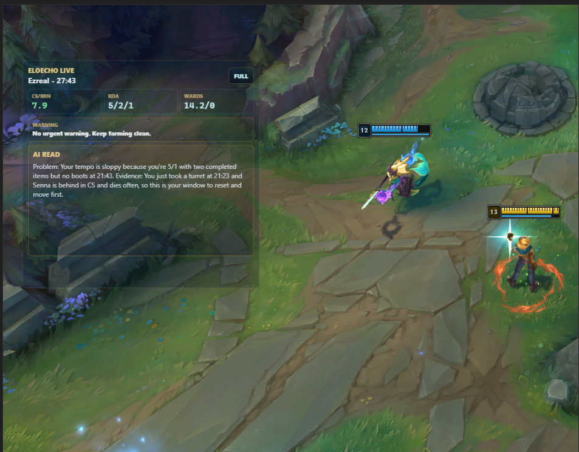
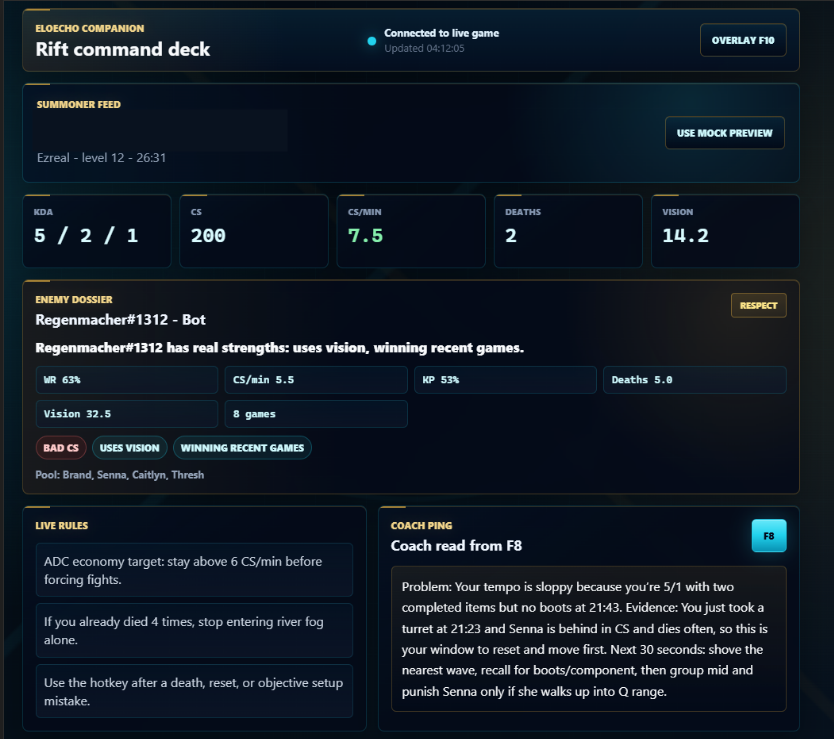

Too much data, not enough direction
Players often get plenty of numbers, but not much help deciding which mistake actually mattered.
A solo concept prototype for clearer League coaching
EloEcho started with a question I kept coming back to: after a bad ranked game, why is it still so hard to understand the one thing that actually mattered? Players get stats, graphs, and timelines, but that does not always turn into useful feedback.
I built this concept around one principle: less feedback, but better feedback. The case includes a landing page, a speculative live overlay, and a companion dashboard. The current version uses mocked and redacted examples to make the flow clear, not to pretend it is already a fully integrated Riot product.

I defined the product direction, wrote the framing, designed the landing page, shaped the live overlay, and built the companion dashboard and feedback hierarchy.
This is a concept prototype, not a shipped Riot integration. The match examples are mocked or redacted, and the main output is the product direction and interaction model.
A lot of gaming tools are great at collecting data, but much worse at turning that data into direction. After a loss, players often know a lot about the match and still do not know what to fix first.
So the design question became: how could I reduce all of that post-game information into one useful takeaway and one next action while the game is still fresh?
Players often get plenty of numbers, but not much help deciding which mistake actually mattered.
If feedback shows up too late or feels too abstract, it is easy to queue again without learning much from the loss.
The best version of this product is not the one that says the most. It is the one that helps the player act on one clear thing.
The site leads with a very direct promise: stop guessing why you lost. I wanted that clarity right away, because otherwise it would just feel like another vague AI helper or stat tracker.
Visually, I leaned into a darker, more competitive tone, but I tried not to let the atmosphere take over. The product still needed to read clearly before it looked cool.
I explored the live overlay as a speculative direction for faster feedback. The idea was to give the player a lightweight read of what is happening: champion, timing, a few core stats, and one coaching note that points to the main problem.
At the same time, I do not think this is automatically the best product direction. It raises real questions about distraction, usefulness, and whether live feedback actually helps in the moment. That is why I see the overlay as the riskier idea and the post-game companion as the stronger one.

The companion view is where the concept really clicked for me. It gathers match context into one command deck with key stats, a read on the player, an enemy dossier, a few lightweight rules, and one coaching panel that turns the analysis into something practical.
What I like about it is that it does not try to become a massive analysis suite. It stays focused on turning raw match information into one useful coaching read.

I prioritized a single coaching read instead of trying to summarize everything that happened in the match.
I split the concept across a live overlay and a companion view so the player is not asked to process too much in the middle of play.
I used boxed panels, short labels, and clear hierarchy because this product needs fast reading more than long-form explanation.
The concept improved when I stopped treating more information as the answer.
The dashboard was drifting toward another dense analysis tool, with too many signals competing for attention.
I reduced the overlay, sharpened the website promise, and made the post-game takeaway the center of the companion.
The hard part was not inventing more features. It was deciding what to leave out. The strongest direction separates lightweight live feedback from deeper post-game review and gives the player one useful next action.
I'm interested in products where clear interfaces and good feedback can genuinely change how people learn, perform, or decide.
Press Escape to close or click outside the image.